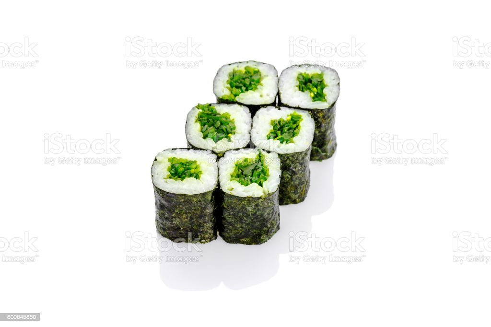
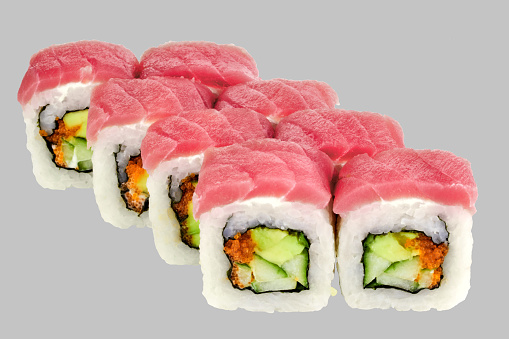
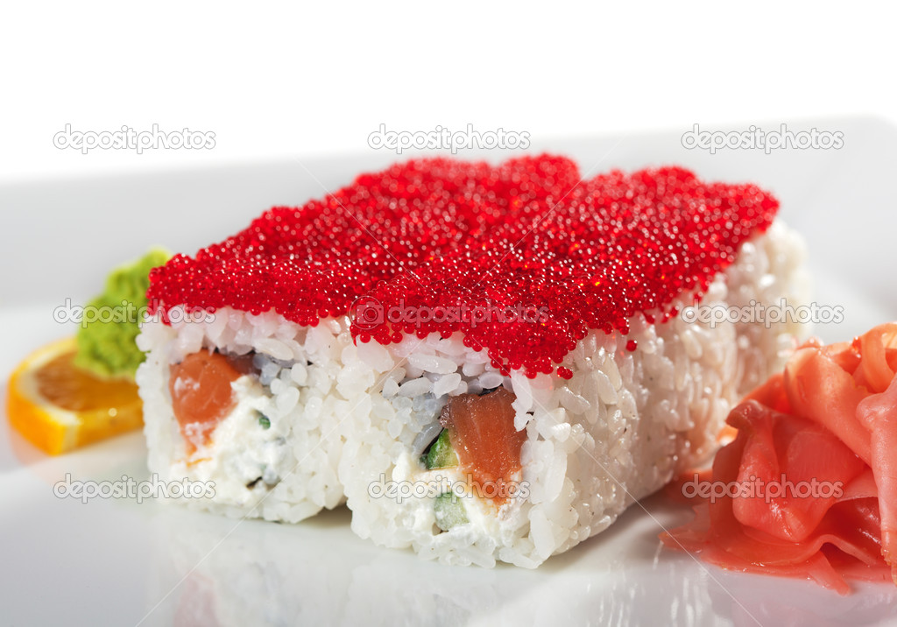

Суші
|  |
ЧуккаДієтичні суші, що готуються з однойменного салату, рису, кунжуту та водоростей норі. |
|  |
МагуроКласичні суші Готуються з тунцю та рису |
|  |
ТобикоІкра летючої риби, рис, норі |